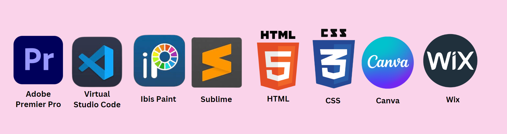

My Education Background
My education history and institutions that I attended.
- Diploma – UiTM Segamat (2017-2021)
- High School – SMK Tunku Kurshiah (2017-2022)
- Primary School – SK Tunku Kurshiah (2011-2016)
- Kindergarten – Tadika Komputer Cerdik (2008-2010)
Subjects Taken
Subjects I have learned that are related to Information Management.
- Information and communication technology
- Organization and access to information
- Foundation of records management
- Information and technology application in information agencies
- Computer system operation
- Reference and bibliometric services in information agencies
- Human communication for information professionals
- Entrepreneurship
- Metadata developement in information management
- Cataloging
- Database for business information professionals
- Electronic recordkeeping
- Electronic publishing
My Skills
The level of my soft skills.
Web Designing
English Fluency
Coding
Editing
Software Tools
Software tools that I proficient in using it.
